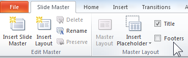
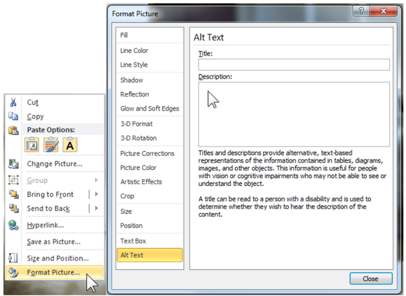
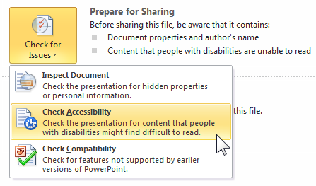
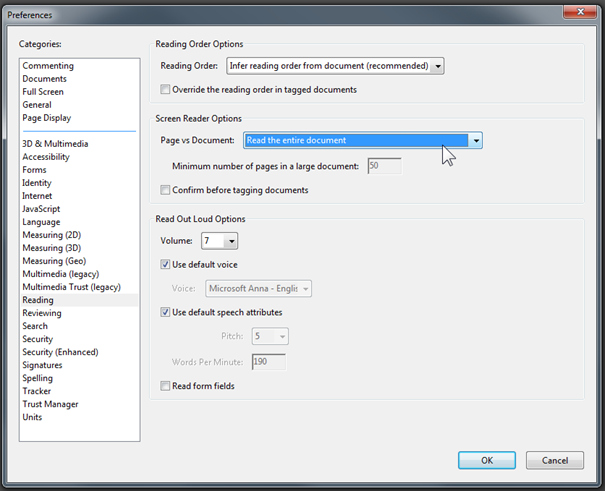

About
Documentation under the CC BY SA 3.0 license, source code of this site and examples are available on github.
The Orange logo and some images or screenshots are the property of Orange:
Copyright (C) 2016 Orange SA All rights reserved
List of the concerned files
Cookie management
You can change your preferences at any time directly from the Cookie Management Panel.
Your opinion matters ...
Have a bug or a feature request?
Please first check the issues and search for existing and closed issues. If your problem or idea is not addressed yet, please open a new issue.
General recommendations for content
Introduction
This section proposes general recommendations to ensure your contents are accessible whatever the medium used (email, Web, Word, etc.).
Check colours
- Make sure colour is not the only means used to convey information.
- Make sure there is sufficient contrast between the text colour and the background.
The contrast can be checked with Colour Contrast Analyzer :
- 4.5:1 for normal size text.
- 3:1 for big text.
Facilitate reading
- Align text to the left, don’t justify it.
- Use an easily-readable font family with a minimum size of 12 pixels.
- Use simple punctuation.
- Avoid italics, completely capitalised sentences; but always put a capital at the beginning of a sentence.
- Avoid textured backgrounds (images).
- Do not do too many repeated carriage returns or tabs to space contents (rather, use “Paragraph > Spacing” or “Indent” in Word for instance).
- Avoid layout and data tables.
- Avoid information-conveying content in images (graphs, schemas, diagrams,…)
- Signal the end of the document (for instance, an image saying “End of email”, or a white-on-white text “End of document”).
- Use simple, clear and short phrase turns: subject, verb, complement. One idea per sentence, with simple words.
- Explain complicated words.
- Use the present tense, preferably direct style, and active form (no subjunctive, no conjunctions).
- Use proper typographic characters: dash -, em-dash —, “rounded quotes”.
- Avoid foreign words, abbreviations except those that are genuinely used.
Provide accessible layout tables
Simplify tables, even if we know that email clients (including Outlook) still often demand to use tables for layout.
Checkpoints:
- In general, don’t do complex table layouts (merging cells, multicolumn,…).
- Avoid embedding layout tables (maximum two levels of embedding), but also:
- Don’t merge table cells, but use several simpler tables.
- Don’t keep empty cells.
- Don’t add background images.
- Make sure that the sequential order is correct (one can read left to right and top to bottom).
- Avoid complex data tables, graphs or schemas.
Accessibility recommendations Orange for content
General recommendations for content
The general recommendations describe the recommendations to respect whatever the type of content (web, email, Word document, etc.).
Specific recommendations by type of content
The following recommendations describe the specific rules to be followed depending on the type of document:
Creating accessible PDF documents
Introduction
Producing accessible PDF documents requires to follow recommendations to make sure they are structured through proper tagging, to make them understandable and useable by everyone (including users with assistive technology).
Below are listed guides aiming at providing necessary information in order to manually create accessible PDF documents based on the most popular softwares, then we will list the mandatory criteria to follow for PDF accessibility.
Guides to create accessible PDF documents
With Microsoft Word
You will find Microsoft Word recommendations as well as the PDF export procedure on our Creating accessible Word documents page.
With Adobe InDesign
You will find Adobe InDesign recommendations (in French) at Créer des documents PDF accessibles avec Adobe Indesign by the AcceDe PDF initiative.
With Adobe Acrobat Pro
You will find Adobe Acrobat Pro recommendations at Making PDF documents accessible with Adobe Acrobat Pro by the AcceDe PDF initiative.
Testing the accessibility of a PDF document
Install PDF Accessibility Checker (PAC).
This tool can, among other things, run automatic tests on a PDF document and check for accessibility issues.

Mandatory criteria
The following are the main criteria for a PDF document to be accessible, regardless of the method used to create it. Mandatory criteria will be useful for people creating PDF documents even when they don’t rely on publication software (Microsoft Word, Adobe InDesign, Adobe Acrobat Pro), e.g. developers whose applications generate PDF documents.
Document structure
Le document doit contenir a minima un titre de document et une langue par défaut (les changements de langues seront indiqués dans le document).
The document must at the very least include a document title and a default language (language changes must be indicated in the document).
The document is structured with titles, through the proper use of title “tags”. Moreover, long documents must include bookmarks to make navigation easier.
The use of headers and footers must help the user locating themselves in the document.
See PDF14.
Keyboard navigation and reading order
The reading order conveyed by an assistive tool, as well as keyboard navigation (through tabbing) must reflect the document’s structure. There must be no keyboard trap (keybaord navigation must be possible in the whole document without any blocking point).
Images
Images featuring information must have an appropriate alternative. Scanned documents must be covnerted to text through optical character recognition (OCR). Decorational images must be hidden.
Tables
A data table must be structured by a table “tag” containing at least one line. Table headers must be used appropriately. All lines must contain the same number of cells. Merged cells must clearly indicate if the merge was vertical or horizontal (rowSpan or colSpan attribute).
SeePDF6.
Links
Link texts must be explicit, or the links must provide an accessible alternative.
Lists
Lists must use the appropriate “tags”: list tag L, list item tag LI, list item label tag Lbl (for instance the item number, or the Lbody content tag of the list item).
See PDF21, section 14.8.4.3.3 of the PDF specification.
Forms
Form fields must have a name, a role, a value, and a state (if needed). Visually, labels must be correctly positioned towards the field. Mandatory fields and expected formats must be indicated. Fields must be accessible and keyboard-modifiable. Forms that can be submitted must provide a submit button.
See PDF5, PDF10, PDF12, PDF15, PDF22.
Colours
Colours must not be the only means to convey information.
Contrast between the colour of text and of its background must be sufficient:
- 4.5:1 for normal-size text;
- 3:1 for bigger text.
Creating accessible PowerPoint documents
Introduction
Producing accessible PowerPoint presentations requires following different rules. They are summarized below (and detailed guides are available on the WebAIM website).
In order to help you, PowerPoint includes a tool to check the accessibility of your presentation. This tool identifies the main errors and proposes different solutions.
Slide Layouts
Defining slide layouts is the first action to do in order to create an accessible presentation, it will ensure information have the correct reading order.
Use the Slide Master view: select the View tab > Slide Master to create or modify slides layouts.

Use the Master Layout submenu to add titles or footers.

Create as many layouts as types of slides needed.
Avoid adding text boxes or images directly into the presentation via the Insert menu but use the Slide Master view.
Note: if you edit the slide layout after you have created the slides, you must reapply the new model.
Presentation properties
Language
The main language must be defined in the tab File > Options > Language.
Every punctual change of language must be identified by selecting the text and: tab Review > Language > Set proofing language.
Other properties
Title, author and tags fields have to be completed in tab File > Info > Properties.

This information is accessible by everyone in Windows Explorer and are readable by the screen readers.
Use unique slide titles
Give every slide a unique and descriptive title, it allows screen reader users to clearly understand which slide they are on.
Wording
Avoid abbreviations and acronyms; explain them at the first occurrence.
If necessary, keep accentuation on capital letters (example: É or Ç): use the Insert tab > Symbol.
Formatting / layout
Use familiar sans serif fonts (such as Arial or Calibri), in a larger font size (18pt or larger).
Begin all sentences by a capital letter but avoid using all capital letters and excessive italics or underlines.
Avoid justifying the text; prefer left alignment.
In order to add white space between sentences and paragraphs, use option: right click on the text and select Paragraph… > Indents and Spacing.

Colors and contrasts
Use sufficient contrast for text and background colors
The presentation of text should have a contrast ratio of at least 4.5:1. Here are some examples on a white background:
- Foreground black : very good contrast, ratio = 21:1
- Foreground #767676 (dark grey), acceptable contrast, ratio = 4.54:1
- Foreground #AAAAAA (lighter grey), unacceptable contrast, ratio = 2.32:1
If you choose to not use the Orange Group colors guidelines, you can download the Colour Contrast Analyser tool; it will be useful for checking your contrasts.
Ensure that color is not the only means of conveying information
For people who can not see the colors or the shades of colors, it is important to convey the information differently.


Appropriate colors and contrast are necessary for people to see your presentations and understand their meaning.
Bulleted Lists or Numbered Lists
Always use the appropriate and native functions in order to create lists.

Pictures and other Images
Add alt text to images, shapes or SmartArt graphics in your PowerPoint slides.
In order to write a good alt text, make sure to convey the content and the purpose of the image and its context in a concise and unambiguous manner.
Right-click on an image and select Format Picture or Format Shape > Alt Text.

Type the alt text in the Description text box (but leave Title blank, this information is not conveyed to assistive technologies). If the picture is only decorative, leave the Description text box blank. Alternative text helps people who can’t see the screen to understand what’s important in images and other visuals. Do not use text in images to convey important information.
Note: If a picture or a chart is too complex to describe with alt text, you will need to provide a text description elsewhere. You can add the full description to the Notes section of the slide for example. In this case, put a very short description in the alt text, endings with the words: “full text description in the Notes section of this slide”.
For every downloadable file, it is necessary to specify its name, type, size and language (if different of the presentation language). Screen reader users sometimes scan a list of links, so the labels have to be simple and easy to understand.
Tables
Use a simple table structure, and specify column header information.
Ensure that tables don't contain split cells, merged cells, nested tables, or completely blank rows or columns.
If a table is too complex, you will need to provide an additional description: Right-click Format Shape > Alt Text.
Audio or video file
For audio and video content, in addition to alt text, include closed captioning for people who are deaf or have limited hearing.
Video content must have synchronized captions and also needs a rich description of the visual components. Closed captions typically also describe audio attributes such as music or sound effects that occur off-screen. Subtitles typically contain a transcription (or translation) of the dialogue.
Audio content must have a transcript.
Avoid automatic launching or slide transitions.
Avoid content that blinks or flashes more than three times a second.
Set the reading order
The order in which the screen readers read the slide contents can be modified in the Selection pane.
On the Home tab, in the Drawing group, select Arrange > Selection Pane.
The elements of your slide are read in the reverse order listed in this pane.

Accessibility Checker
At least, run Accessibility Checker to make sure your content is accessible.
In File tab > Check for Issues.

Convert to PDF
Save you presentation as PDF: File tab > Save As and save as type PDF.
Check the « Document structure tags for accessibility » option.

PDF is often a better format to present PowerPoint presentations electronically.
Note: If your presentation have more than 50 slides, it is better to advise your readers to change the following setting in Adobe:
Edit > Preferences > Reading > Screen Reader Options > Page vs Document: "Read the entire document"

To check PDF document accessibility: download PDF Accessibility Checker (PAC 3).
For more detailed information
- PowerPoint Accessibility, WebAIM
- Microsoft Accessibility Support website
- (FR) Créer des documents bureautiques accessibles, DINISIC.
Videos, audios, and animated components
Introduction
All pre-recorded videos should have a transcript attached and closed captions available, and audio description available when necessary.
Provide a transcript
Transcripts include the text of the words spoken in the video, and also the text of important words that appear on screen and important actions or changes of scene. It must be provided in text, HTML (to be preferred) or Word and must be immediately after the video.
Perimeter: all.
Provide captions
Captions are a text version of the speech and sound on the video. They are displayed over the video. Captions should appear at the same time as the sound they are captioning and appear onscreen long enough to be read. Closed captions have to be preferred over open captions as they can be set on or off by the viewer while open captions are displayed to all viewers. They are mainly needed for users with hearing disabilities.
Perimeter: videos, animated components.
Provide audio descriptions when important visual information is not covered in what is said
Audio descriptions are separate audio tracks containing speech that describes the action, characters, and scenes of a video. It is played along with the video and it lets blind and vision-impaired users know what’s happening on the screen.
Audio description is not needed for talking heads only, or for text on slides as long as the slide text is included into what is said. Audio description might be needed for components like charts and diagrams.
Perimeter: videos, animated components.
Choose an accessible media Player
- Captions and audio description supported
- On/off command for captions, audio description and setup menu
- Buttons and controls usable without a mouse and properly labeled
- Accessible to keyboard-only users and screen reader users.
Media player must support captions, and audio descriptions. Users must be able to set these features on and off.
Users with disabilities may use navigational devices other than a mouse, such as keyboards or screen readers. For this reason, users should be able to operate the media player without using a mouse. The player should also label its buttons and controls, so that users with screen readers can hear the name of each button and control and select the correct option.
Perimeter: all.
Do not play videos automatically when the page loads
This can be confusing for many users, and the sound can interfere with assistive technologies such as screen readers.
Perimeter: all.
Do not use videos that have more than three flashes within a period of 1 second
This can provoke seizures in users with epilepsy.
Perimeter: videos, animated components.
All other relevant criteria such as color contrasts must also be enforced.
Creating accessible Word documents
Introduction
Accessible Word documents are needed in order to be read by all users. Creating accessible Word documents requires to respect the following recommendations. It also enables you to produce accessible PDF documents through the PDF export functionality inside Word.
Recommendations
You will find below a summary of the recommendations to follow. For more detail, please refer to the DINSIC website (in French).
1. Use “Heading” styles for headings and sub-headings
Headings and sub-headings must use the “Headings” styles (Heading 1, Heading 2, etc.) to structure the document’s content and provide easy access to them.
2. Use the “Normal” style for texts
The “Normal” style must be used for all text paragraphs (default style).
3. Use dedicated styles to emphasize some contents.
Use predefined styles to emphasize some contents (e.g. quotes, legends, etc.) rather than using character formatting tools (bold etc.).
4. Don’t insert empty lines
Space between lines must be created through Paragraph options, where you can define the space before and after a paragraph.
Page jumps must be created via proper “Jumps” (Insert > Page jump, new page).
5. Use bulleted lists
Lists must be made using the option “Bulleted list” or “Numbered list”, and not by inserting dashes into the text.
6. Use footnotes
Options to insert “Footnotes” and “Endnotes” must be used to properly insert notes in your document.
7. Number your pages
The “Page number” option makes it easier to get one’s bearings in a document.
8. Use “Columns” to layout text
The “Columns” option in the Layout group must be used (instead of tables) to layout the page as proper columns.
9. Define the anchor for objects inserted into the page
When you insert objects (image, shape, SmartArt, etc.), it is necessary to define an anchor point: in the options for page flow, choose the option “Aligned on the text” or “Top and bottom”.
10. Avoid text zones
Floating text zones are not always properly read by screen readers. Texts can be emphasized through the use of borders around a paragraph, for instance.
11. Ensure colour is not the only means to convey information
Information given through colour must also be conveyed via another means like shape, position, size…
12. Ensure a sufficient contrast
Contrast between the colour of text and of its background must be sufficient:
- 4.5:1 for normal-size text;
- 3:1 for bigger text.
Contrast can be verified with the Colour Contrast Analyzer.
13. Define language
Language must be defined through the menu: File > Options > Language. Words or groups of words in another language must be explicitly described as such (menu: Revision > Language > Define the verification language).
14. Provide replacement text for images
If the image conveys information, you must provide a replacement text describing its content (right click, Image format > Replacement text > Description field). If the image is strictly for decoration, the Description field must be left empty.
15. Make simple tables
Data tables must stay simple. Avoid blending cells together. Avoid inserting images: they will not be read as table elements but as independent elements which will be read before or after the table according to the internal document’s reading order. Leave no empty cell.
16. Use the automated Accessibility checker
Word provides an Accessibility checker (menu File > Check for problems > Check accessibility). It lists all contents prone to be hard to deal with and automatically detects failures. This tool must be used as it provides a huge help; however it does not prevent you from checking and applying all the recommendations provided in this page.
17. Exporting the document to PDF
To export to PDF you only need to go to File > Save as. Choose a name and select PDF as file type. The first time, make sure that the “Accessibility-friendly document structure tags” checkbox in Export options is checked.
Please note that in Word for Office 2010 generated PDF documents can show accessibility issues, e.g. for the vocalisation of images. These issues were corrected in the following versions of Microsoft Office.
18. Insert an table of contents
For any long document (more than 2 pages), insert an automatically generated table of contents, in the menu & nbsp ;: References & nbsp;> Table of contents. It makes easier for everyone to find their way around and quickly go to the content you want to read.
Note that you must update this table of contents as soon as you change the structure of the content, so prefer to generate the table of contents at the end of the content modifications.